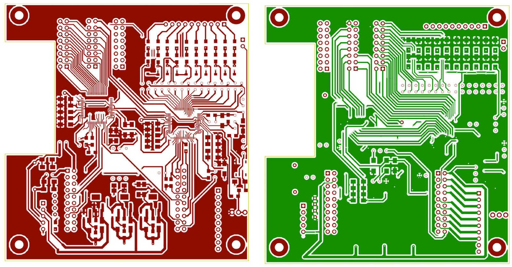
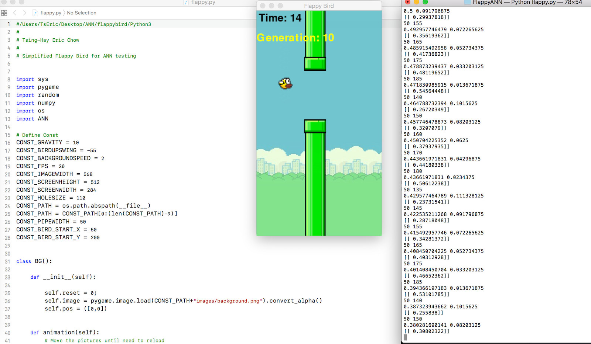
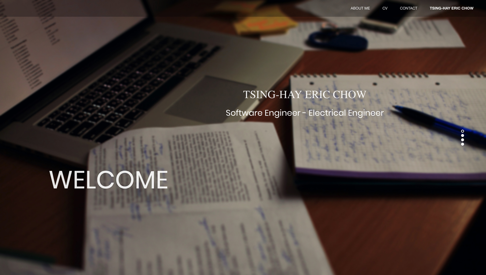
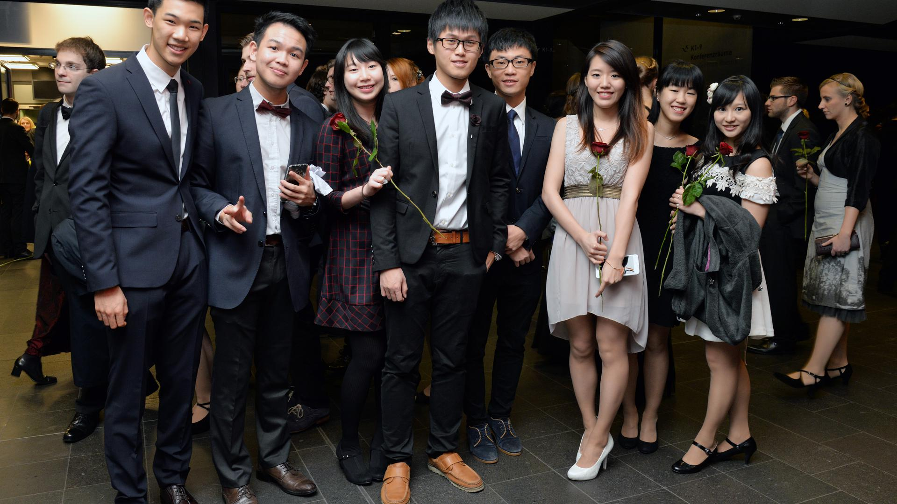
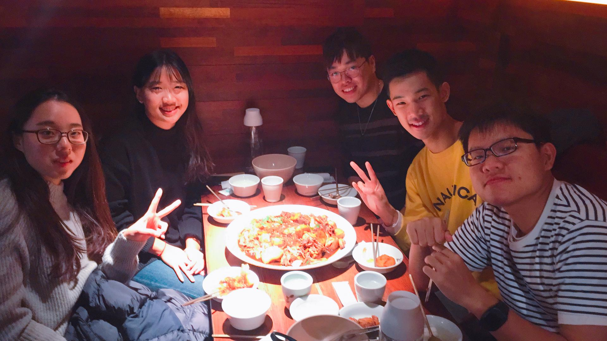

Hello, my name is Tsing-Hay Eric Chow and I'm 21 years old. I'm currently living in Taiwan and studying at the National Tsing Hua University.
I was born in Germany and was always passionate about technology and problem solving, and therefore I am studying a bachelor's degree in Electrical Engineering and Industrial Engineering at RWTH Aachen University in Aachen, Germany.
In my free time, I love playing board games (especially Bang!), explore the natural landscapes, watch series (US, HK, Korean and China), spent time with family as well as with inspiring and passionate people and so much more. It's hard to name it all. Nevertheless, these are a few of my favourite things:




